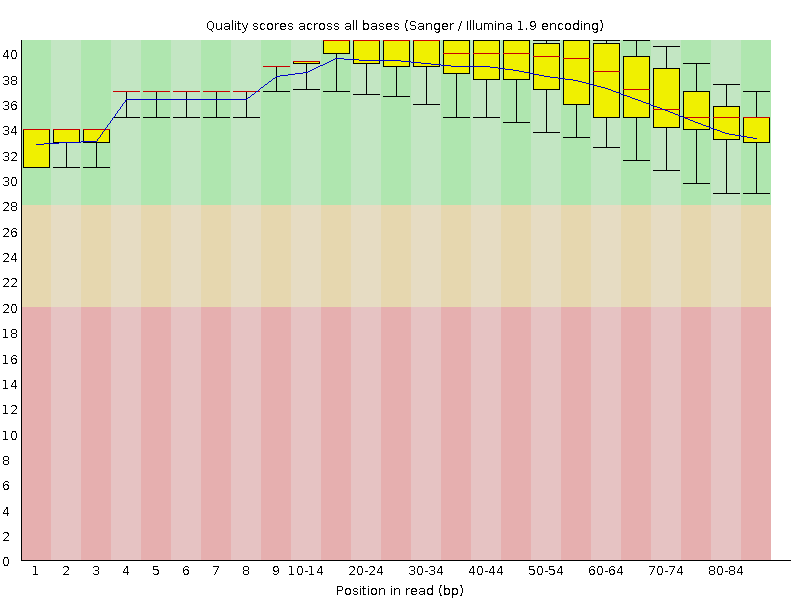
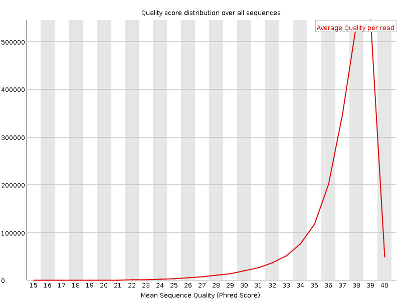
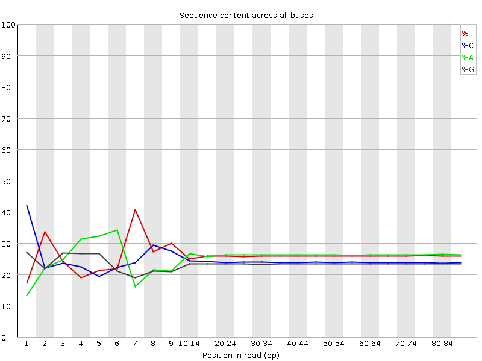
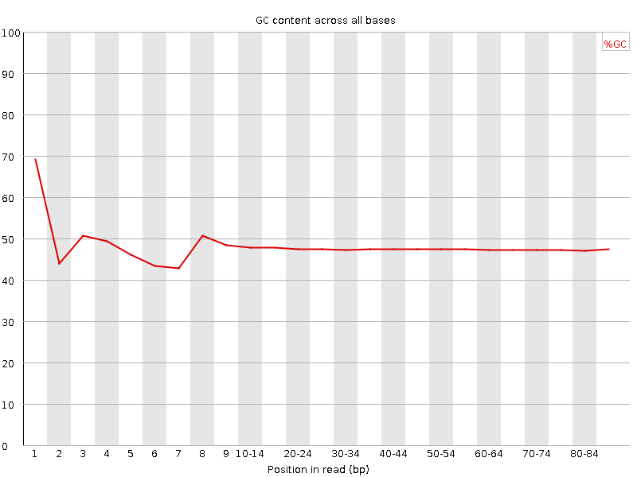
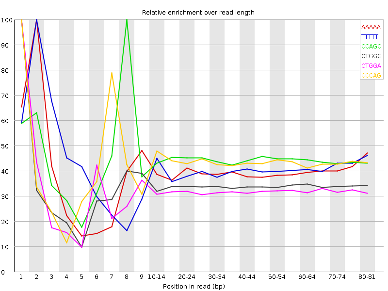

![[OK]](Icons/tick.png) Basic Statistics
Basic Statistics
| Measure | Value |
|---|---|
| Filename | c786-O.3_2.f.fastq |
| File type | Conventional base calls |
| Encoding | Sanger / Illumina 1.9 |
| Total Sequences | 2061626 |
| Filtered Sequences | 0 |
| Sequence length | 85 |
| %GC | 47 |
Per base sequence quality

Per sequence quality scores

![[FAIL]](Icons/error.png) Per base sequence content
Per base sequence content

Per base GC content

Per sequence GC content

Per base N content

Sequence Length Distribution

![[WARN]](Icons/warning.png) Sequence Duplication Levels
Sequence Duplication Levels

Overrepresented sequences
No overrepresented sequences
Kmer Content

| Sequence | Count | Obs/Exp Overall | Obs/Exp Max | Max Obs/Exp Position |
|---|---|---|---|---|
| AAAAA | 561660 | 2.7309022 | 6.9157953 | 2 |
| TTTTT | 494465 | 2.4759593 | 6.0352583 | 2 |
| CCAGC | 347670 | 2.374721 | 5.338972 | 8 |
| CTGGG | 316390 | 2.2986236 | 6.758668 | 1 |
| CTGGA | 341715 | 2.233131 | 6.9555354 | 1 |
| CCCAG | 323985 | 2.2129433 | 5.0872383 | 1 |
| TCCAG | 341115 | 2.167847 | 6.6147885 | 7 |
| CAGGA | 322410 | 2.0946121 | 5.115009 | 1 |
| CTTCA | 361815 | 2.0805328 | 5.2259574 | 1 |
| CTCCA | 331180 | 2.0467725 | 5.7318654 | 6 |
| CTGGC | 275655 | 1.9475502 | 5.0961447 | 1 |
| CAGAA | 330900 | 1.9337351 | 5.0909123 | 1 |
| AAAAT | 391635 | 1.9154428 | 5.4432645 | 3 |
| GAAAA | 353850 | 1.9126995 | 5.2452884 | 1 |
| CTCAG | 274795 | 1.7463715 | 5.075628 | 1 |
| CTTTT | 315210 | 1.6963893 | 5.006584 | 1 |
| CTTTG | 282735 | 1.6816862 | 5.1020694 | 1 |
| GGAAA | 278695 | 1.6747564 | 5.242316 | 1 |
| CTTGG | 243345 | 1.59966 | 5.039772 | 1 |
| ATCCA | 216085 | 1.2352576 | 5.348105 | 6 |